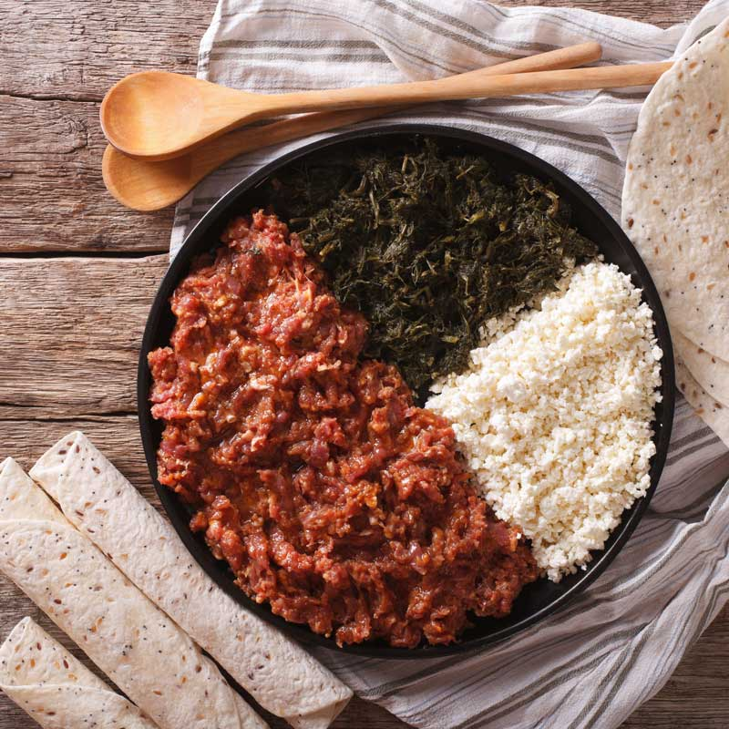

Kitfo

Description
Kitfo (Amharic: ክትፎ, IPA: [kɨtfo]), is an Ethiopian traditional dish which originated among the Gurage people. It consists of minced raw beef, marinated in mitmita (a chili powder-based spice blend) and niter kibbeh (a clarified butter infused with herbs and spices).
Ingridients
- 2 lbs top round beef (freshly cut)
- 6 teaspoons ground cayenne pepper (Mitmita*)
- 4 tablespoons clarified butter (Nitir Kebe)
- 1 teaspoon cardamom powder (korerima)
- 1⁄4 teaspoon garlic powder (optional)
- salt and black pepper
Steps
- Cut the meat in small pieces; remove fat and seams.
- In a food processor put small amount of the meat at a time, spread some mitmita, grind until meat is finely chopped; using a fork, remove any residue of fat and seams; place the spicy ground meat in a dish; repeat the process until all required meat is done.
- In small pot, on a lower heat melt the butter, add the remaining mitmita, false cardamom, (garlic, black pepper, salt, if needed); remove from heat.
- Combine the spicy ground meat with the spicy butter; using fork and spoon, mix it until completely marinated.
- Place it in a lightly warm serving dish, serve it immediately with Injera or bread. If preferred, sauté the marinated meat for two to three minutes.
- Note: As Steak Tartar is uncooked dish, choice of first class quality meat and cleanliness is important.
* You will find these spices in Ethiopian or Indian shops/groceries.
** Please go to this link to see how to prepare Purified/Clarified Butter (Nitir Kebe).